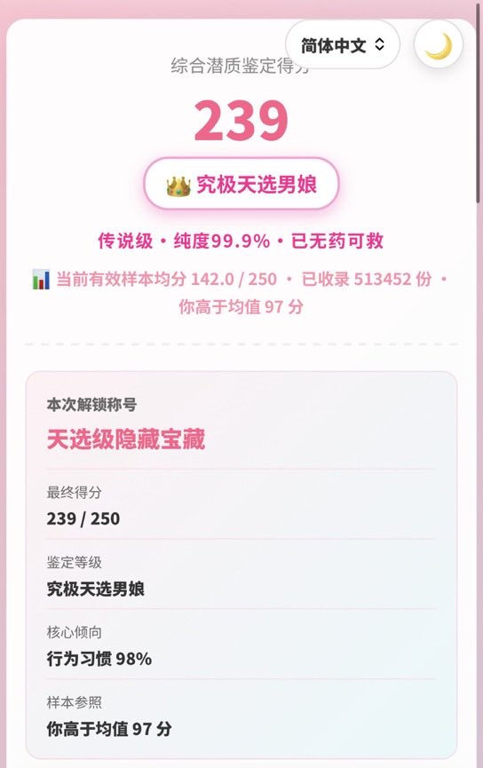
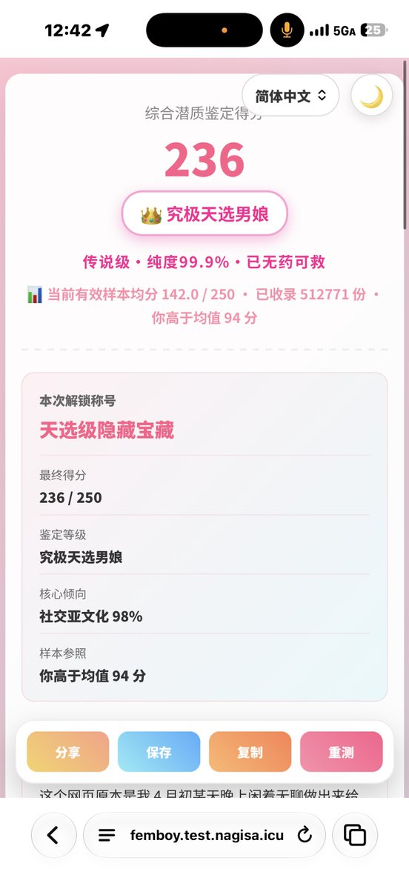

lovely水
@lovelyshuimao
@JKraw7809 测试逻辑是应该是有男娘倾向的男生
分太高就会给打 0 分


kliya
@JKraw7809
@lovelyshuimao 和绝大多数测验一样，含多次逻辑层级跳跃。
比起它判决我乱点，我更质疑数据库本身的完整性...当然，它的制作者明确的指出是ai混流，一宿制作的（）
这段回应也可能存在误判，因为给我0分所以，我作为人类，感到有点生气。